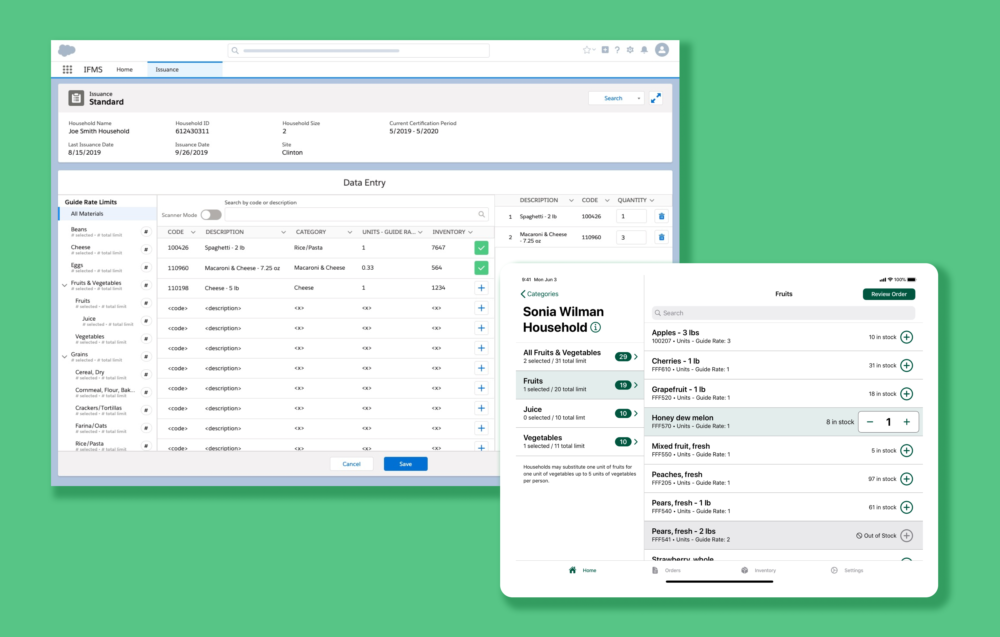

From custom enterprise systems to public-facing dot gov rebrands, I’ve done a little bit of everything.
Winter 2020 • Deloitte Digital
HUD Design System
As part of HUD.gov's redesign, I conducted a component audit of existing high-fidelity mockups. From there, I built and organized over 200 scalable, custom symbols, text styles, and layer styles utilizing atomic design principles.
Spring 2020 - Spring 2021 • Deloitte Digital
FHA Website Redesign
I co-led the redesign and launch of fha.gov, the Federal Housing Administration’s consumer-facing site, which serves over 8 million single family homeowners.
Fall 2019 - Spring 2020 • Deloitte Digital
Food Management System
I redesigned key features of the interface that government workers use to provide food to nearly 100,000 low-income individuals.

Summer 2018 • Deloitte Digital
Learning & Development Portal
During my summer internship at Deloitte, I prototyped a website through which employees can request continuing education programs.
Fall 2018 • Carnegie Mellon University
RSVP'd
For my senior capstone project, I designed a mobile app prototype that helps event planners predict attendance by providing predictability, motivation, and accountability.